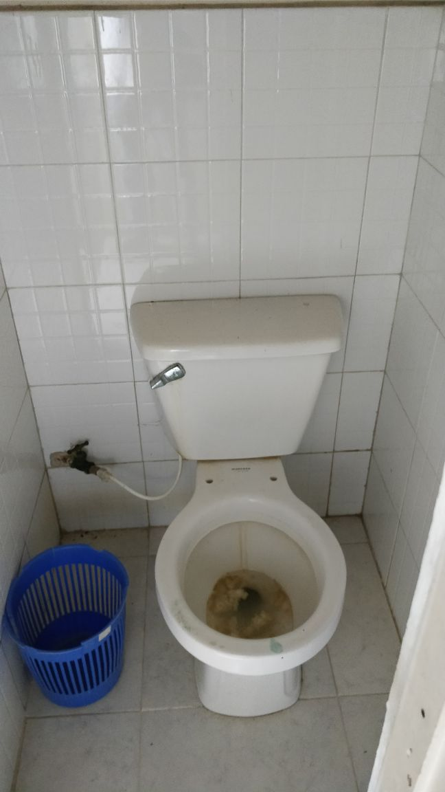
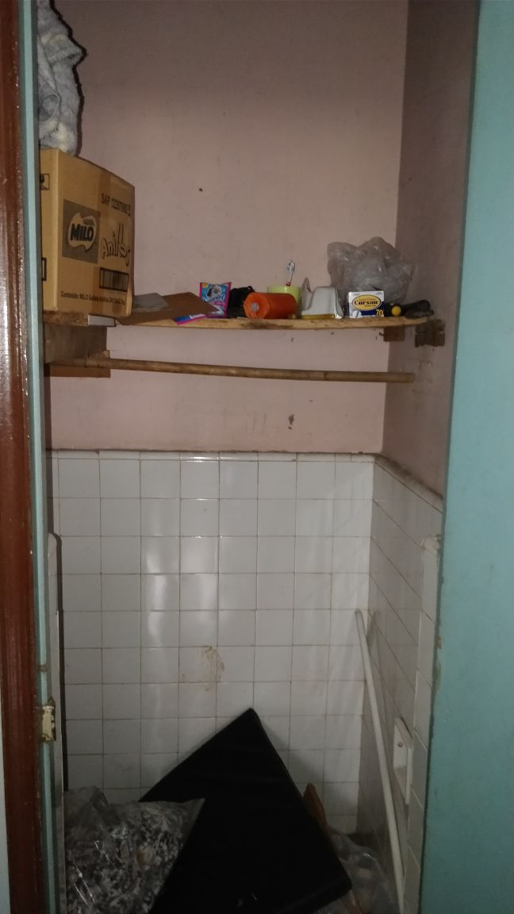

Somos inspiradores, apasionados y poderosos.
Nosotros la tribu ORINGA somos líderes inspiradores apasionados y poderosos. Vamos a impactar nuestros niños huerfanos de Medellín enseñandoles que los sueños se pueden cumplir, que el arma es la sonrísa y que el límite es el cielo.
TRIBU ORINGA
El hogar del niño es una fundación ubicada en las afueras de Medellín, en los límites entre La estrella e Itagüí.
Es un hogar de paso para niños que no conviven con sus familias debido a multiples problematicas de la sociedad (drogadicción, alcoholismo, entre otras).
Son 133 niños que habitan este recinto que oxilan entre la edad de 8 a 13 años.
Ésta fundación no cuenta con ayudas por parte del govierno, por ende...


Para nosotros es muy importante contar con tu ayuda, saber hay gente que indirectamente nos apoyan a lograr nuestro objetivo.
No tienes que donar fondos económicos, una voz de aliento también nos ayudará para recargarnos y seguir luchando por este sueño.
Sólo hazlo la vida te lo agradecerá...
ENVÍA UN MENSAJE